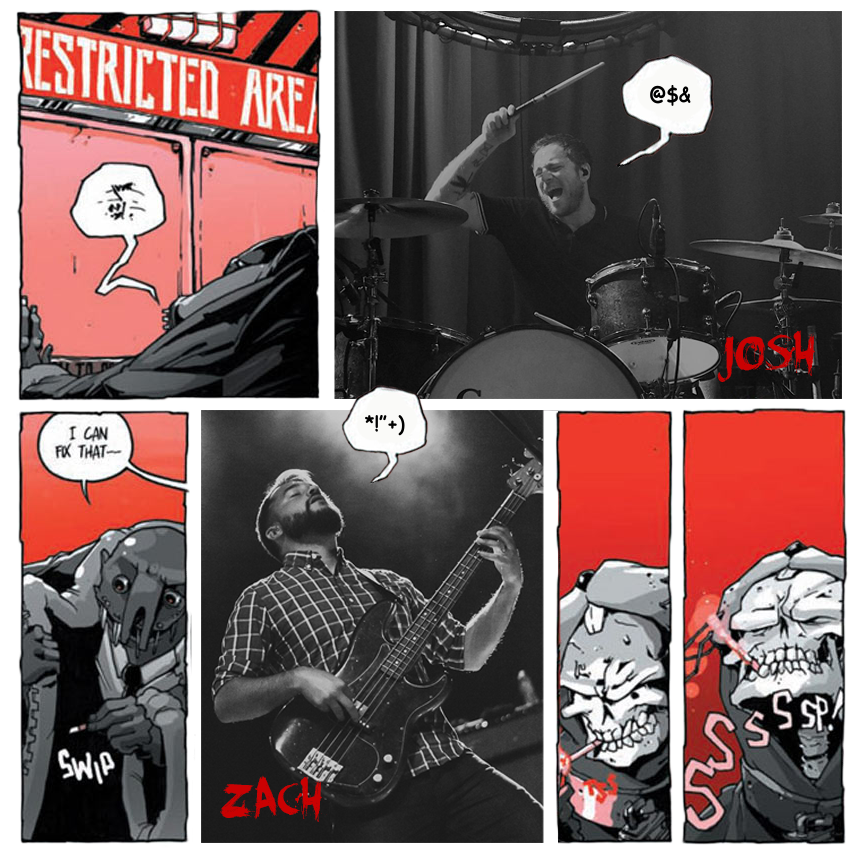

When the list of most creative progressive rock bands of the 21st century is compiled, Coheed and Cambria will be somewhere near the apex. Although, considering the humility of the guys in the band, they would be happy enough just to be in the company of the other greats on the list. They may be pleased to fit into a list like that, but it seems their fires are stoked a a lot more by producing music that defies lists, defies convention altogether actually. Since Coheed and Cambria's inception, the genre bending band have weaved in an out of traditional sonic soundscapes, shattered multimedia templates, and gained legions of loyal die-hard fans known as Children of The Fence. I am one of those fans.
When I first discovered Coheed and Cambria in 2006, I was in desperate need of escape from the trivialties of everyday life. While others in my immediate circle were drowning in their own debaucheries, I was filling my body with as much new music as I could find. After borrowing a Coheed album from a friend, I got cozy in my room with my headphones at full blast. From the moment I pushed play on that discman, I new I had opened up a new world to explore.
Coheed and Cambria’s albums at that point had each unfolded a volume of a corresponding comic book series written by lead singer Claudio Sanchez. The sprawling sci-fi epic played out within this dual medium platform is full of Claudio's own personal demons, demons I had fought so often in my own past, demons many of us wrestle with at some point. The demons in Coheed’s music are parrallelled in character form within the narrative of "The Amory Wars" comic books. The real life experiences of the band members are personified as dragonflies, monsters, blue angels, IRO-bots, and even a possessed bicycle named Ten Speed ( of God’s Blood and Burial). Claudio Sanchez even parrallelled himself as the epic's reluctant hero: Claudio Kilgannon. Later on, I would learn that Claudio Sanchez hid within these story arcs, puzzles based on people he knew in reality, but for now I lost myself in the fantasy of the fantasy of Coheed and Cambria's music.
The first song I truly fell in love with was "Time Consumer," track 2 from their debut studio album: The Second Stage Turbine Blade, which has remained a fan favorite album to date. "Time Consumer" is a melodic post-hardcore romp filled with murederous parents, a mad scientist, an antagonist’s henchman, and Matthew and Maria: the little brother and sister of Claudio Kilgannon. On my initial listen I assumed the high pitched voice of the lead vocalsist belonged to a badass female who’s vocal tones varied according on what character was being acted out. If you can imagine Rush vocalist, Geddy lee, as a possessed five-year old girl, then you have an idea of my listening experience. Over a rhythm section that growls and screeches through time signatures that might seem impossible on paper, the guitars play the part of soothsyaer warnign of impending doom. With subtle rythmic nods to another of my favorite bands, At The Drive In, and psychotic tales being spun throughout the lyrics, this song anchored the band deep into my heart for good. To this day, I still get chills listening to "Time Consumer." I still shudder as I hear Coheed Kilgannon, Claudio Kilgannon's father, poison his own children to save his home planet's inhabitants.
Like the hero he created, Claudio Sanchez was also reluctant. He was an introvert who would rather spill his guts into works of fiction than tackle conflicts head on. He poured himself into the band, and the band poured themselves into the music. They worked tirelessly, from the ground up building a small cult following that would gladly pay cover into whatever broken down venues the band played week to week. The fans supported the band with loyalty, and the band supported the fans with the soundtrack to their lives. Through that symbiosis, Claudio Sanchez and the band have become reluctant heros to their fans, while the fans have become the band’s extended family. Unlike many of their contemporaries, the band has always remained humble while attaining mainstream success.
Eleven years have passed since my first Coheed experience, although I still listen to their music as much as I ever did. I listen with the same sense of wonder, though nothing can quite compare to the childlike curiosity of playing with a new toy, or learning a new game. Now days I find more pleasure in learning new software, or a new skill. Nevertheless, I eagerly await each new album the band releases as if it will contain some new arrangement of sounds I have never heard before. One can dream right? That's what it's all about after all, dreams. Coheed and Cambria have spoiled me by converting their dreams into music that sparks imagination. It has always been music to dream to. Their output quality has maintained such a high level, and they have crossed genres or defied them for so long that it has become their norm. It’s funny, I fell in love with Coheed and Cambria because they helped me break free from normality, now I find comfort in the norm they provide. I find comfort in the welcoming community of fans, and I couldnt be more at home as one of the Children of The Fence.